НОРМАЛЬНО РОЗПОДІЛЕНА ВИПАДКОВА ВЕЛИЧИНА
Випадкова величина X називається нормально розподіленою, якщо її диференційна функція розподілу має вигляд:
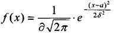
де а - математичне сподівання
Імовірність того, що прийме значення, які належать інтервалу 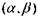дорівнює:
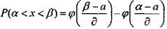
Де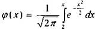 - функція Лапласа.
Імовірність того, що абсолютна величина відхилення менша додагнього числа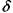, дорівнює:
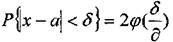
або ж, коли зробити заміну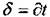
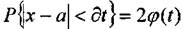
ПРИКЛАД:
Головний габаритний розмір типової деталі, що випускає автоматизована система, розподілений по нормальному закону з математичним сподіванням а = 500мм та середньо-квадрапичним відхиленням д= 10мм
1) Визначити, в яких симетричних межах слідує чекати габарити 11 її розмір деталі з імовірністю 0,95;
2)Визначити імовірність того, що деталь буде бракованою, якщо бракованою вважати деталь, що має відхилення габаритного розміру від номіналу більше 20 мм;
3) Визначити імовірність того, що габаритний розмір деталі не перевищить 515 мм. РОЗВ'ЯЗОК: 1) Використовуємо формулу:
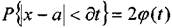
Тоді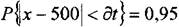
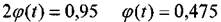
По таблиці функцій Лапласа знаходимо, що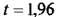 Тоді
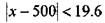
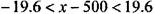
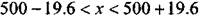
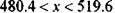
Це і є шукані симетричні межі.
3)Використовуємо формулу:
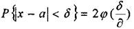
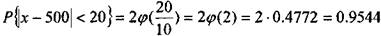
Це ми знайшли імовірність деталі бути не бракованою - це подія протилежна. Тому шукана імовірність:
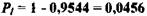
4)Використовуємо формулу: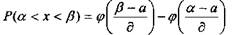 Тоді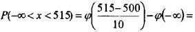
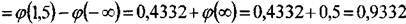